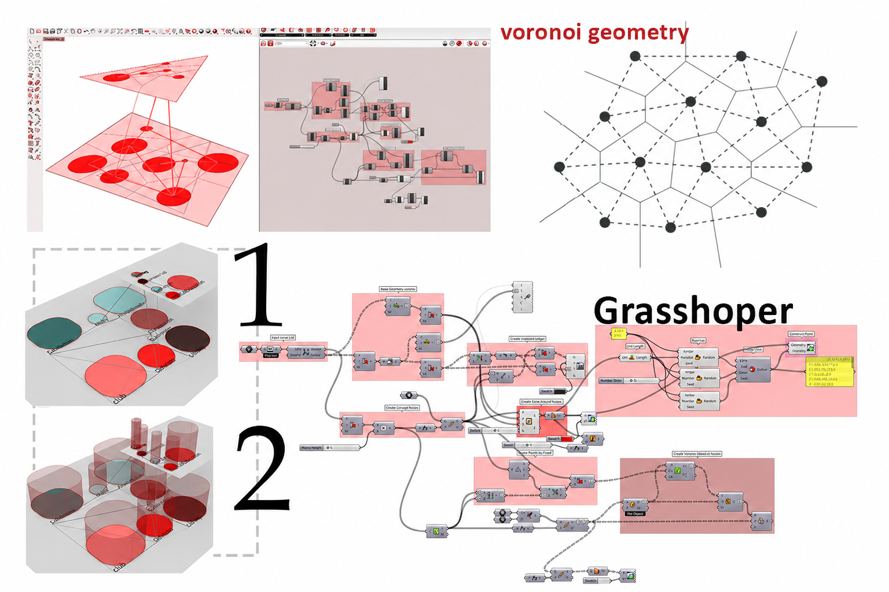
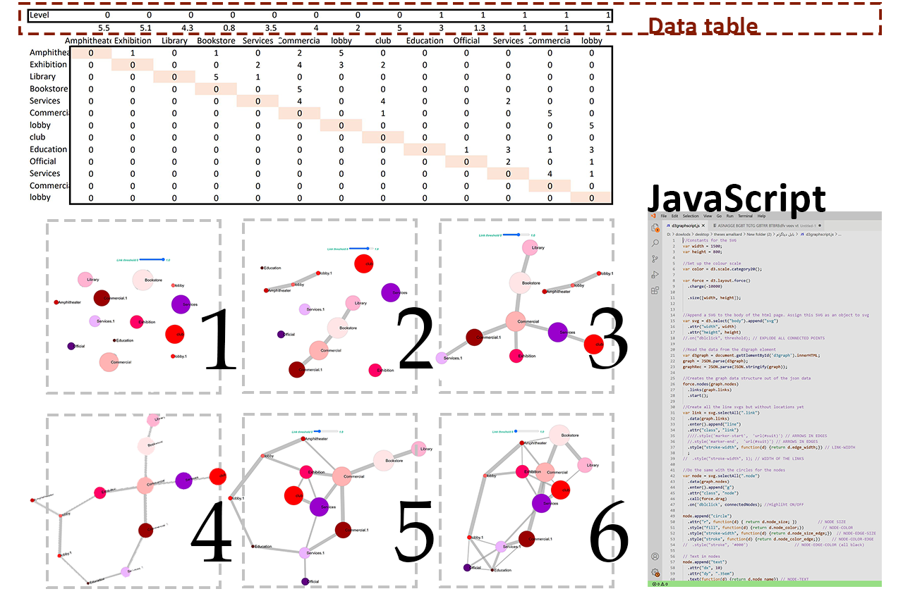

SpaceGraph — making spatial relationships visible.
Designing a large building means dealing with a lot of spaces that all need to relate to each other in specific ways. I tried the standard tools, found them lacking, and ended up building something of my own.
3Tools explored
SoloProject
BScThesis
Where it started
A building with a lot of spaces and no clear way to see how they fit together.
For my bachelor's thesis, I was designing a community center in Toronto for Iranian immigrants. The program was complex: cultural halls, language classrooms, community gathering spaces, administrative areas — all with specific requirements about which spaces needed to be close to each other, which needed separation, and how different floors should connect vertically.
The standard architectural approach to this problem is a concordance matrix: a table where you mark the desired relationship between every pair of spaces. I filled it in. But looking at a grid full of numbers didn't really help me think spatially. I could read the data, but I couldn't see the building.
The matrix told me what. It didn't help me see why.
When you're trying to understand which clusters of rooms belong together and how strongly they pull toward each other, a table is the wrong format. I needed something I could look at and immediately understand — not decode.
The process
Two dead ends and one tool that worked.
Getting to SpaceGraph took two earlier attempts, each of which solved part of the problem and revealed a new limitation.
First try
Concordance Matrix
The standard tool architects use — a grid where each cell marks how strongly two spaces need to relate. I entered all the data for the Toronto building.
The problem: it's still just a table. Hard to read spatially, impossible to compare alternatives visually.
Second try
Node.js Bubble Diagram
I built a custom diagram in Node.js where each space is a bubble — its size representing the required area — connected to other spaces by lines whose thickness shows the strength of their relationship. This was the first time the data actually made visual sense.
The problem: everything was flat. There was no way to show vertical relationships between floors, and I couldn't easily move spaces around to test alternative configurations.
Final tool
SpaceGraph
Built in Grasshopper — Rhino's parametric design environment — SpaceGraph kept everything that worked in the bubble diagram and added what was missing: the ability to drag spaces freely, see the diagram update in real time, and visualize vertical floor-to-floor connections as a distinct layer.
For the first time, I could actually design with the diagram rather than just read it.
The Node.js bubble diagram — the first visual version. Bubble size represents the area of each space, line thickness represents required relationship strength.
The tool
Drag a space, watch the diagram respond.
SpaceGraph runs inside Grasshopper, Rhino's visual programming environment. You feed it the space data — areas, relationship weights, floor assignments — and it generates a 3D bubble diagram you can interact with directly. Move a space, and every connected line updates instantly.
The vertical dimension was the key addition over the Node.js version. Being able to see floor-to-floor connections as a separate visual layer made it much easier to think about circulation and vertical zoning — which is one of the harder things to reason about in early-stage architectural design.
⚪
Size-encoded spheres
Each space is a sphere whose size corresponds to its required area — so larger rooms are immediately obvious.
〰️
Weighted connections
Lines between spaces vary in thickness based on how strong the functional relationship needs to be.
🏢
Vertical floor relationships
Floor-to-floor connections are shown as a distinct layer — finally making vertical circulation visible in the diagram.
🔄
Live drag interaction
Spaces can be repositioned freely inside Grasshopper — relationships update in real time as you explore alternatives.

SpaceGraph running in Grasshopper — spaces positioned by hand, with relationship lines and floor connections updating live.
The building
A community center for Iranian immigrants in Toronto.
The project SpaceGraph was built to serve was a community center designed around the specific needs of Iranian immigrants living in Toronto. Before starting the spatial design, I researched both Toronto's city planning requirements and the cultural and social needs of the community: what kinds of spaces matter, how people gather, what makes a building feel like it belongs to you.
That research shaped the program — and the complexity of that program is what made a tool like SpaceGraph necessary in the first place.

The community center design — developed using SpaceGraph to work through the spatial relationships before committing to a layout.
Tech stack
Parametric design, custom built.
GrasshopperRhino 3DNode.jsJavaScript
Outcome
A diagram you can think with, not just read.
SpaceGraph made it possible to move between the data and the design in a way the concordance matrix never did. By the time I was done with it, the diagram had become a genuine part of the design process — not just a reference document, but something I was actively working with to test ideas.
Something that stuck with me
This project taught me that the tools you use shape what you can think. A table keeps you in analysis mode. A diagram you can drag and reshape puts you in design mode. That's a small distinction that makes a big difference — and it's something I think about a lot when designing interfaces now.